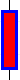
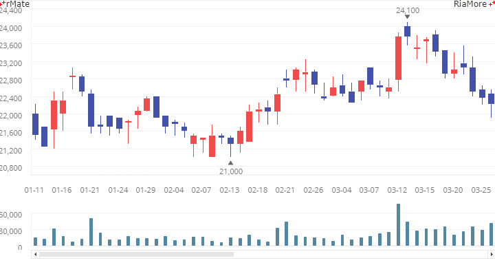
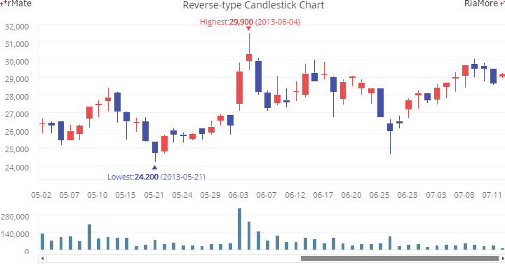
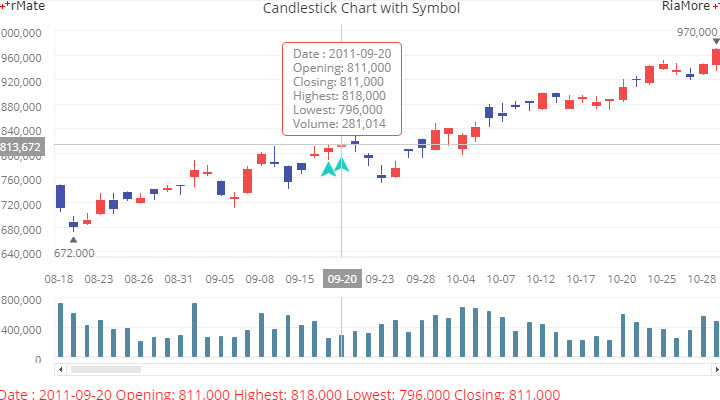
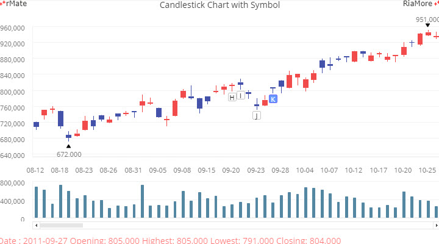
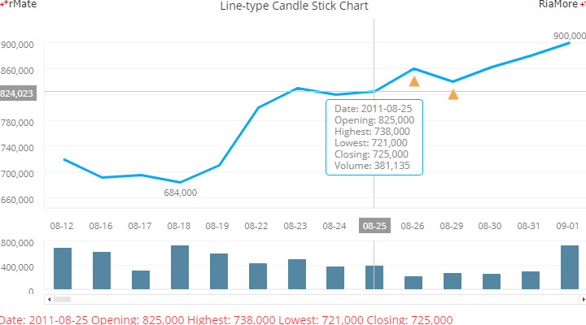
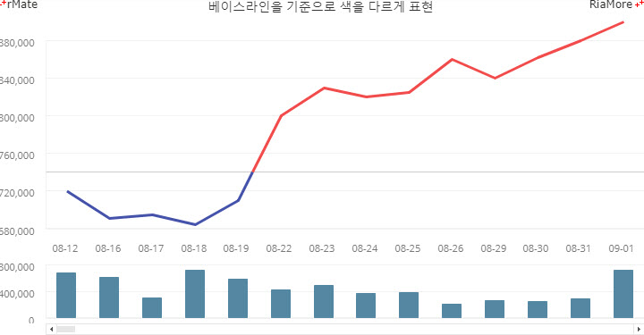
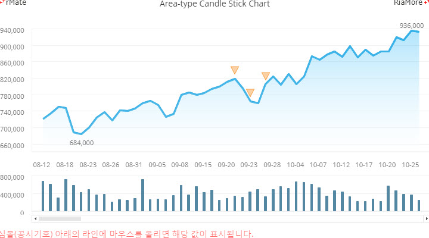

캔들스틱 차트
캔들스틱 차트는 주식, 선물과 같은 상품의 거래를 표현하고 분석하는데 유용한 차트입니다.
하나의 캔들스틱은 특정시점(일)의 가격 변동에 대한 4 가지 정보를 표현하는데 이는 시가, 종가, 저가, 고가로 이루어져 있습니다.
그러나 전문적인 주식 차트와 같이 마우스를 이용하여 특정한 지점에 선을 표시하거나 기호를 삽입하는 것과 같은 기능은 지원하지 않습니다.
캔들스틱 차트에서 지원하는 기능은 다음과 같습니다.
- 차트에 최소값, 최대값을 표시할 수 있습니다.
- 최소값, 최대값을 사용자가 원하는 형태로 표현할 수 있습니다.
- 공시에 대한 데이터가 존재한다면 공시기호로 이를 표현할 수 있습니다.
- 공시기호를 아이템 렌더러(itemRenderer)를 통해 표현가능하며 div 객체를 이용하여 특정 문자나 이미지를 표시할 수 있습니다.
- div 로 표현된 공시기호는 마우스 클릭 이벤트를 받을 수 있습니다.
- 시가와 종가에 따라 선 색상, 막대 테두리, 막대 배경 색상 등을 변경할 수 있습니다.
- 차트에 보여지는 데이터 아이템의 개수를 변경 할 수 있습니다.
캔들스틱 차트는 <Candlestick2DChart> 노드의 series 속성값에 <Candlestick2DSeries> 노드를 설정하여 생성할 수 있습니다.
캔들스틱에 표현되는 시가, 종가, 저가, 고가 데이터는 <Candlestick2DSeries> 노드의 다음 속성에 설정합니다.
| 속성명 |
유효값 (*: 기본값) |
설명 |
| openField |
텍스트
|
시가 정보가 저장된 필드명을 지정합니다.
|
| closeField |
0 과 1(*) 사이의 숫자
|
종가 정보가 저장된 필드명을 지정합니다.
|
| lowField |
0(*) 과 1 사이의 숫자
|
저가 정보가 저장된 필드명을 지정합니다.
|
| highField |
0(*) 과 1 사이의 숫자
|
고가 정보가 저장된 필드명을 지정합니다.
|
캔들스틱의 선과 배경의 스타일은 <Candlestick2DSeries> 노드의 다음 속성에 설정합니다.
| 속성명 |
유효값 (*: 기본값) |
설명 |
| fill |
<SolidColor>
|
종가가 시가보다 큰 캔들스틱의 배경색의 스타일을 지정합니다.
|
| stroke |
<Stroke>
|
종가가 시가보다 큰 캔들스틱의 선의 스타일을 지정합니다.
|
| boxStroke |
<Stroke>
|
종가가 시가보다 큰 캔들스틱의 박스선의 색의 스타일을 지정합니다..
|
| declineFill |
<SolidColor>
|
종가가 시가보다 작은 캔들스틱의 배경색의 스타일을 지정합니다.
|
| declineStroke |
<Stroke>
|
종가가 시가보다 작은 캔들스틱의 선의 스타일을 지정합니다.
|
| declineBoxStroke |
<Stroke>
|
종가가 시가보다 작은 캔들스틱의 박스선의 색의 스타일을 지정합니다.
|
다음은 위에서 설명한 속성에 값을 적용해서 표시된 캔들스틱의 예제입니다.
| 캔들스틱 |
속성값 설정 |
|

|
<stroke>
<Stroke color="#000000"/>
</stroke>
|
|
<fill>
<SolidColor color="#ff0000"/>
</fill>
|
|
<boxStroke>
<Stroke color="#0000ff" weight="3"/>
</boxStroke>
|
캔들스틱 차트는 일반적으로 하단에 보조 차트를 함께 보여줍니다. 보조 차트는 컬럼 차트로 표현하며 일반적으로 메인 차트의 캔들스틱에 대한 거래량이나 거래금액 정보를 보여줍니다.
메인 차트와 보조 차트는 <DualChart> 노드에 <mainChart> 속성과 <subChart> 속성으로 정의하는데 구조는 다음과 같습니다.
<DualChart leftGutterSyncEnable="true" rightGutterSyncEnable="true">
<mainChart>
<Candlestick2DChart showDataTips="true" paddingBottom="0" dataTipDisplayMode="axis">
…
</Candlestick2DChart>
</mainChart>
<subChart>
<Column2DChart showDataTips="true" height="20%" gutterTop="6" gutterBottom="6">
…
</Column2DChart>
</subChart>
</DualChart>
다음은 캔들스틱 차트를 생성하는 코드와 이를 적용해서 출력한 차트의 예제입니다.
이 예제에서는 메인 차트와 보조 차트에 표시되는 십자선(CrossRangeZoomer)을 동기화하기 위해서 <CrossRangeZoomer> 노드의 syncCrossRangeZoomer 속성에 서로의 <CrossRangeZoomer> 속성의 고유값(id = “candleCRZ”, id = “columnCRZ”)을 지정하였습니다.
그리고 한 화면에 표시되는 데이터 아이템(캔들스틱)의 개수를 보기에 적당한 수(visibleItemSize = “50”)로 설정하고, 화면에 표시되지 못하는 데이터 아이템을 스크롤바를 이용하여 조회할 수 있도록 <DualScrollBar> 노드를 <dataSelector> 속성에 지정하였습니다.

See the CodePen 알메이트 차트 - 캔들스틱 차트
역방향 캔들스틱 차트
<DualScrollBar> 노드의 inverted 속성을 “true” 로 설정하면 최근 데이터를 먼저 화면에 표시할 수 있습니다. 따라서 최초에 차트가 생성되면 스크롤바 커서는 우측 끝에 위치하게 됩니다.
<dataSelector>
<DualScrollBar inverted="true" visibleItemSize="50"/>
</dataSelector>

See the CodePen 알메이트 차트 - 역방향 캔들스틱 차트
공시기호 표시
캔들스틱 차트에서 특정 데이터에 대한 공시 정보를 기호로 표시할 수 있습니다.
공시 정보를 기호로 표시하기 위해서 <Candlestick2DSeries> 노드의 symbolType 속성을 “normal” 로 지정하고 symbolRenderer 속성에 표시하고자 하는 기호를 지정합니다.
| 속성명 |
유효값 (*: 기본값) |
설명 |
| symbolField |
텍스트
|
공시 정보를 표시할지 여부가 표시된 데이터 필드명을 지정합니다.
|
| symbolType |
normal(*), div
|
공시 정보의 표시 유형을 지정합니다.
normal: symbolRenderer 속성에 지정된 기호를 표시합니다.
div: symbolLabelField 속성에 지정된 데이터 필드의 값을 표시합니다.
|
| symbolRenderer |
UpArrowItemRenderer(*), DiamondItemRenderer,
CircleItemRenderer, TriangleItemRenderer,
CrossItemRenderer, XShapeItemRenderer,
IShapeItemRenderer, RectangleItemRenderer
|
symbolType 속성값이 “normal” 일 경우, 공시 정보로 표시할 기호를 지정합니다.
|
| symbolLabelField |
0(*) 과 1 사이의 숫자
|
symbolType 속성값이 “div” 일 경우, 공시 정보로 표시할 텍스트가 저장된 데이터 필드명을 지정합니다.
|
다음은 공시 정보를 삼각형 기호(symbolRenderer = “TriangleItemRenderere”)로 표시하는 캔들스틱 차트를 생성하는 코드와 이를 적용해서 출력한 차트의 예제입니다.
<Candlestick2DSeries openField="open" closeField="close" highField="high" lowField="low" showMinValueLabel="true" showMaxValueLabel="true" symbolField="gongsi" symbolRenderer="TriangleItemRenderere">
...
</Candlestick2DSeries>
"date" : "20110916",
"open" : 794000,
"high" : 811000,
"low" : 792000,
"close" : 798000,
"admnt" : 476632
},{
"date" : "20110919",
"open" : 800000,
"high" : 814000,
"low" : 788000,
"close" : 808000,
"admnt" : 246920,
"gongsi" : true
},{

See the CodePen 알메이트 차트 - 캔들스틱 차트 - 공시기호 표시
공시문자 표시
다음은 공시 정보를 문자로 표시하는 캔들스틱 차트를 생성하는 코드와 이를 적용해서 출력한 차트의 예제입니다.
이 예제에서는 symbolType 속성이 “div” 로 지정되었고, 공지 정보로 표시할 문자가 저장된 데이터 필드명이 symbolLabelField 속성에 지정되었습니다.
공시문자를 클릭하면 실행될 자바스크립트 함수명은 symbolClickJsFunction 속성에 지정되었습니다.
<Candlestick2DSeries openField="open" closeField="close" highField="high" lowField="low" showMinValueLabel="true" showMaxValueLabel="true" symbolField="gongsi" symbolType="div" symbolLabelField="gongsiLabel" symbolClickJsFunction="gongsiDataFunc" symbolColor="#000">
...
</Candlestick2DSeries>

See the CodePen 알메이트 차트 - 캔들스틱 차트 - 공시문자 표시
캔들라인 차트
위에서 설명한 캔들스틱 차트와 동일하지만 데이터 포인트에 캔들스틱을 표시하지 않고 데이터 포인트를 하나의 선으로 연결하여 표현할 수 있습니다.
특정 기간 동안의 데이터의 변동 현황을 파악하는 목적으로 유용하게 활용될 수 있습니다.
캔들라인 차트는 <CandleLine2DSeries> 노드의 series 속성값에 <CandleLine2DSeries> 노드를 설정하여 생성할 수 있습니다. 다음은 캔들라인 차트를 생성하는 코드와 이를 적용해서 출력한 차트의 예제입니다.
<DualChart leftGutterSyncEnable="true" rightGutterSyncEnable="true">
<mainChart>
<CandleLine2DChart showDataTips="true" paddingBottom="0" dataTipJsFunction="dataTipFunc">
...
<series>
<CandleLine2DSeries yField="open" showMinValueLabel="true" showMaxValueLabel="true" symbolField="gongsi" symbolRenderer="TriangleItemRenderer">
...
</CandleLine2DSeries>
</series>
</CandleLine2DChart>
</mainChart>
<subChart>
<Column2DChart showDataTips="true" height="20%" paddingTop="0" paddingBottom="0" gutterTop="6" gutterBottom="6">
...
<series>
<Column2DSeries yField="admnt" itemRenderer="BoxItemRenderer">
...
</Column2DSeries>
</series>
</Column2DChart>
</subChart>
<dataSelector>
<DualScrollBar visibleItemSize="14"/>
</dataSelector>
</DualChart>

See the CodePen 알메이트 차트 - 캔들라인 차트
캔들라인 차트에 직선(베이스라인, baseline)을 표시하고, 이 선의 값보다 큰 선과 작은 선의 스타일을 다르게 적용하여 표현할 수 있습니다. 다음은 이에 대한 코드와 이를 적용하여 출력한 차트의 예제입니다.
베이스 라인선의 값보다 큰 선과 작은 선의 스타일을 다르게 적용하는 코드.
<CandleLine2DSeries yField="open" baseValue="740000" >
<lineStroke>
<Stroke color="#f14b4b" weight="3"/>
</lineStroke>
<lineDeclineStroke>
<Stroke color="#4452aa" weight="3"/>
</lineDeclineStroke>
</CandleLine2DSeries>
베이스 라인을 표시하는 코드
<backgroundElements>
<AxisMarker>
<lines>
<AxisLine value="740000">
<stroke>
<Stroke color="#cccccc"/>
</stroke>
</AxisLine>
</lines>
</AxisMarker>
</backgroundElements>

See the CodePen 알메이트 차트 - 캔들라인 차트 (베이스라인 표시)
캔들영역 차트
캔들영역 차트는 캔들라인 차트와 동일하지만 데이터 포인트를 연결하는 라인과 가로 축 사이의 영역을 특정 색상으로 표현합니다.
캔들영역 차트는 <CandleArea2DChart> 노드의 series 속성값에
<CandleArea2DSeries> 노드를 설정하여 생성할 수 있습니다.
다음은 캔들영역 차트를 생성하는 코드와 이를 적용해서 출력한 차트의 예제입니다.
<DualChart leftGutterSyncEnable="true" rightGutterSyncEnable="true">
<mainChart>
<CandleArea2DChart showDataTips="true" paddingBottom="0" dataTipJsFunction="dataTipFunc">
...
<series>
<CandleArea2DSeries yField="open" showMinValueLabel="true" showMaxValueLabel="true" symbolField="gongsi" symbolRenderer="DownTriangleItemRenderer" symbolPosition="top">
...
</CandleArea2DSeries>
</series>
</CandleArea2DChart>
</mainChart>
<subChart>
<Column2DChart showDataTips="true" height="20%" paddingTop="0" paddingBottom="0" gutterTop="6" gutterBottom="6">
...
<series>
<Column2DSeries yField="admnt" itemRenderer="BoxItemRenderer">
...
</Column2DSeries>
</series>
</Column2DChart>
</subChart>
<dataSelector>
<DualScrollBar inverted="false" visibleItemSize="50"/>
</dataSelector>
</DualChart>

See the CodePen 알메이트 차트 - 캔들영역 차트
레이지 로드
차트가 생성되는 시점에 모든 데이터를 로드하지 않고 레이지 로드 방식을 캔들스틱 차트에 적용할 수 있습니다.
차트 데이터에 레이지 로드를 적용하려면 <CandleLine2DChart> (<Candlestick2DChart>, <CandleArea2DChart>) 노드의 lazyJsFunction 속성에 필요한 양의 데이터를 Ajax 방식으로 로드하는 자바스크립트 함수명을 지정해야 합니다.
이 때 차트의 데이터 함수는 데이터가 존재하는 URL 을 호출하는setDataURL() 함수를 사용해야 합니다.
다음은 이에 대한 코드와 이를 적용해서 출력한 차트의 예제입니다. 이 예제에서 스크롤바의 커서가 우측 끝에 위치했을 때 메인 차트 영역에 마우스를 놓고 왼쪽으로 드래그하면 레이지 로드가 실행됩니다.
var dataURL = "https://www.riamore.net/demo/chart/makeLazyData.jsp?index=";
function chartReadyHandler(id) {
document.getElementById(id).setLayout(layoutStr);
document.getElementById(id).setDataURL(dataURL + 0);
}
<CandleLine2DChart showDataTips="true" paddingBottom="0" lazyJsFunction="lazyDataFunc">
...
</CandleLine2DChart>
var xhr, // ajax object
index = 19; // The total number of data processed.
function lazyDataFunc(id){
var param = {};
param.url = dataURL + (index + 1);
param.success = function() {
var data;
if (xhr.readyState == 4 && xhr.status >= 200 && xhr.status < 300) {
if (xhr.responseXML.xml)
data = xhr.responseXML.xml;
else
data = xhr.responseXML;
document.getElementById(id).addData(data);
index += 20; // Data Size: 20
}
}
ajax(param);
}
See the CodePen 알메이트 차트 - 캔들라인 차트 - 레이지 로드